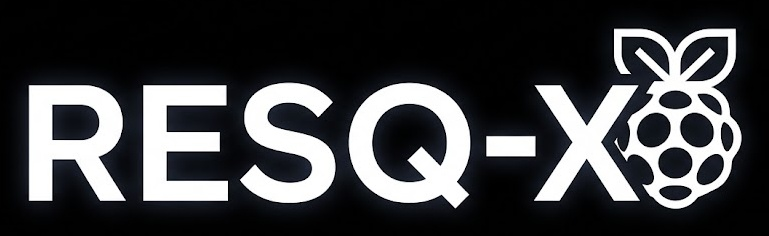
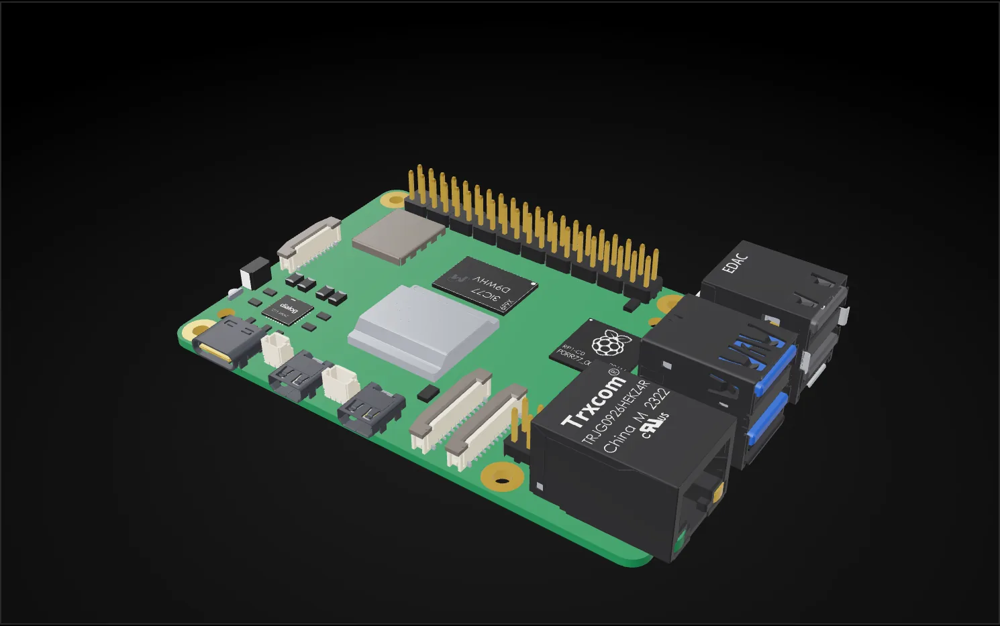

RESQ-X: A small remote-controlled robot to help rescuers inspect dangerous areas after earthquakes.
It sends live video to an operator, drives over small obstacles and uneven ground, and is designed to grow a thermal sensor and a servo-powered lifting arm.
Status: educational prototype in development. The thermal sensor, the lifting mechanism and AI-assisted driving are planned and not yet confirmed working.
The background is a simulated 32×24 thermal grid, the resolution of the MLX90640 sensor. It is an illustration, not sensor data.
- Category
- Engineering
- Team
- Yusif Gurbanzade and Tahir
- School
- European Azerbaijan School
- Control
- PS5 DualSense, manual or AI-assisted (planned)
Project idea
RESQ-X is a remote-controlled robot designed to help rescuers inspect dangerous areas after earthquakes. It uses a camera to send live video to an operator, and we plan to add a thermal sensor to observe temperature differences in the areas it can see.
The robot is designed to move over small obstacles and uneven ground. We also plan to develop a servo-powered lifting arm or small scoop that could help move small rocks and lightweight debris.
The problem
Earthquakes can cause buildings to collapse and leave people trapped under rubble. Searching these areas can be dangerous for rescue workers, because unstable walls and falling objects may cause injuries.
Technology could help rescuers inspect dangerous places before entering them themselves. A small robot with a camera and a simple lifting mechanism could help investigate an area and move some lightweight obstacles.
Aim and research question
The aim of our project is to design and build a small robot that can be controlled remotely and provide useful information about its surroundings. We also want to explore how AI-assisted driving and a servo-powered lifting mechanism could make the robot more useful.
Our research question is:
How can a low cost robot help rescuers inspect dangerous areas and move small obstacles after an earthquake?
How RESQ-X will work
A Raspberry Pi 5 is the robot's main computer. A Raspberry Pi camera provides live video of the area in front of the robot. The operator drives with a PlayStation 5 DualSense controller. We plan to explore AI-assisted driving, and manual driving stays available when AI mode is disabled.
Two geared motors drive the wheels through a belt system. Motor driver boards control the motors and let the robot move forward, backward and turn.
We plan to use an MLX90640 thermal sensor to measure temperature patterns in its field of view. It may help the operator notice unusual warm areas, but it cannot see through solid concrete or rubble, and its readings cannot confirm that a person is trapped.
A servo motor will power a planned lifting arm or small scoop for lifting or moving small rocks and lightweight debris. Its lifting ability depends on the servo's strength and the design of the mechanism, so we will test it with lightweight objects first.
An MPU6050 sensor may measure the robot's tilt, and a buzzer gives a simple sound signal when needed.
The main computer
RESQ-X runs on a Raspberry Pi 5. This is a 3D model of the board. Drag to rotate it, then select a marker to see what that part does for the robot.

Drag to rotate. Hold Ctrl or Cmd and scroll to zoom. Double-click to reset.Drag sideways to rotate. Tap a marker to see what the part does.
Select a markerEach marker names a part of the board and what it does for RESQ-X.
Main components
A filled marker is part of the core build. An orange ring is a planned addition that is not yet confirmed working. A grey ring is optional.
- Raspberry Pi 5The robot's main computer.Core
- Raspberry Pi Camera Module Rev 1.3Live video for the operator, and input for autonomous driving.Core
- TwoCore
JGA25-370geared motorsDrive the robot. - Core
L298Nmotor driver boardsControl the motors for forward, backward and turning movement. - Four crawler-style wheels,Core
GT2belts and pulleysHelp the robot move over small obstacles and uneven ground. - PlayStation 5 DualSense controllerManual remote control.Core
- BuzzerA simple sound signal when needed.Core
- Power banks and suitable power connectionsPower the system.Core
- Planned
MLX90640thermal sensorObserves temperature patterns. To be added after purchase and tested. - Servo motor with lifting arm or scoopMoves small rocks and lightweight debris. Capacity depends on the servo and the design.Planned
- AI-assisted driving softwareA feature to develop and test, not a confirmed working function. Manual control stays available.Planned
- Optional
MPU6050sensorMay be used to measure the robot's tilt.
Methodology and testing plan
We plan to develop and test RESQ-X in several steps:
- Assemble the robot's frame, wheels, motors and belt system.
- Connect the motors to the motor driver boards and set up the power system.
- Configure the Raspberry Pi and camera to provide live video to the operator.
- Set up manual remote control using the PlayStation 5 controller.
- Explore AI-assisted driving and test whether it can work safely alongside manual control.
- Add the MLX90640 thermal sensor after purchasing it and test its readings.
- Design and attach a servo-powered lifting arm or small scoop.
- Test the lifting mechanism using small, lightweight objects to find out what it can safely move.
- Create a safe obstacle course using lightweight materials.
- Test the robot's movement, turning, remote control, camera, lifting mechanism and thermal readings.
We will record our observations and use them to identify problems and improve the design. Testing will take place in a controlled environment, not in a real earthquake or collapsed building.
Expected results
We expect RESQ-X to become a working prototype that can move around a small obstacle course and send video to its operator. If the thermal sensor is successfully integrated, we expect it to display temperature patterns from the areas it can observe.
We also hope to develop AI-assisted driving and a servo-powered lifting arm or scoop that can move small rocks and lightweight debris. The lifting capacity will depend on the servo and the mechanism's design.
Testing will help us understand how well the robot moves and how useful its camera and sensors are. These are expected outcomes, and we will report the actual results after testing the prototype.
Limitations and future improvements
RESQ-X will be a small educational prototype, not a professional rescue robot.
Limitations
- It may have difficulty moving over large rocks or heavy rubble.
- The servo-powered mechanism is intended for small obstacles and may not be strong enough to move heavy rocks or concrete.
- The thermal sensor has limited resolution and cannot see through solid objects. Its readings cannot prove that a trapped person is present.
- AI-assisted driving may make mistakes and will need careful testing.
Future improvements
- Better movement, battery life and lighting.
- An improved camera system and lifting mechanism.
- Software that can help identify people in camera images.
Why it matters
RESQ-X combines robotics, electronics, programming, AI and remote control to explore a real-world problem. It helps us learn how engineering can be used to develop tools that may support rescue teams.
By combining a camera, sensors and a small lifting mechanism, we want to explore how a robot could help inspect dangerous areas and move lightweight obstacles. Even if our prototype has limitations, testing it will help us understand what works, what needs improvement and how future versions could become more useful.
Conclusion
RESQ-X is our attempt to design a small robot that could help rescuers inspect dangerous areas after earthquakes. By combining remote control, a camera, motors, a planned thermal sensor and a servo-powered lifting mechanism, we aim to develop a prototype that demonstrates how technology could support search operations. We also plan to explore AI-assisted driving while keeping manual control available.
Our next steps are to complete the construction, integrate the components and test the robot safely.
Team and references
- Team members
- Yusif Gurbanzade and Tahir
- School
- European Azerbaijan School
- Project category
- Engineering